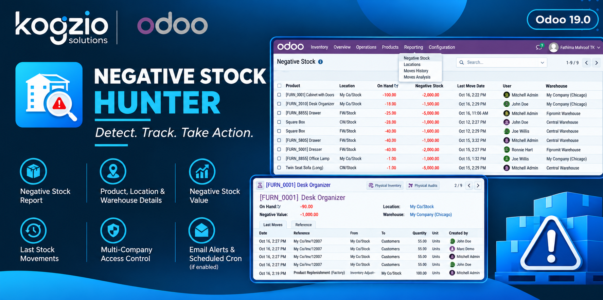
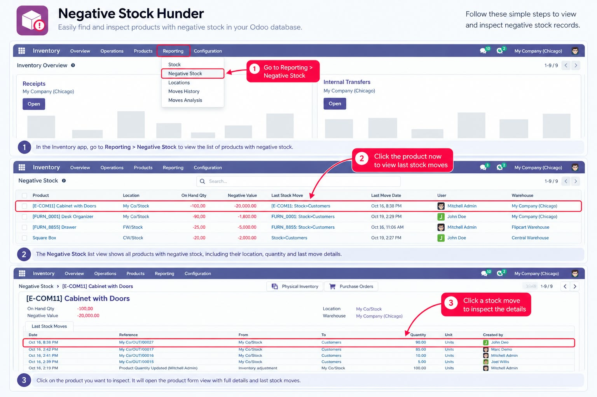
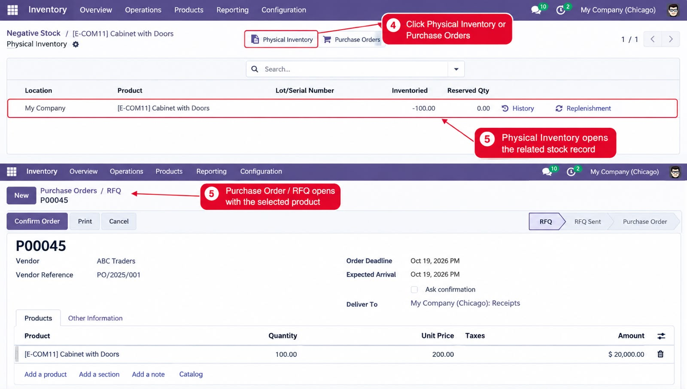
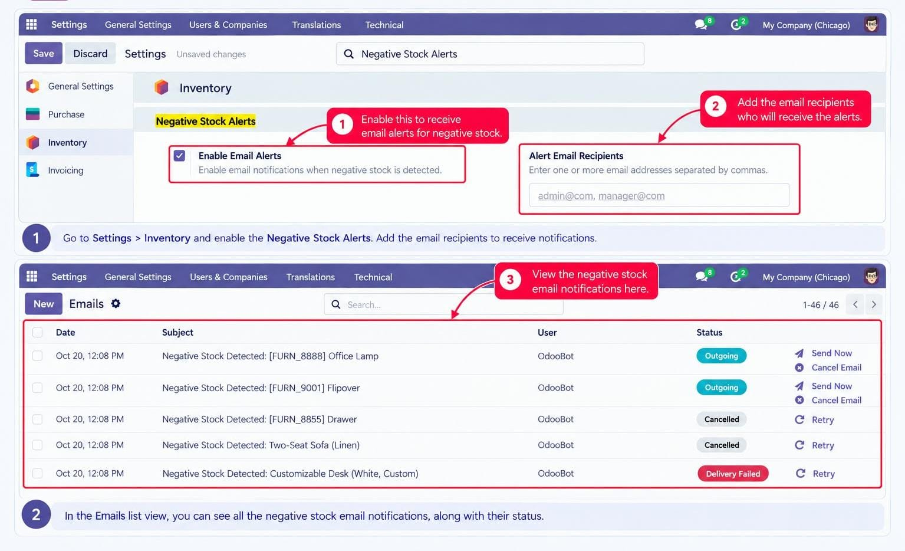

<section class="oe_container" style="background:#FFFFFF; color:#061D2B;">

    <!-- Kogzio Solutions  -->
    <div class="oe_row oe_spaced" style="text-align:center; padding:24px 16px 8px;">
        
    </div>

    <!--  Banner -->
    <div class="oe_row oe_spaced" style="padding:0 16px 20px;">
        <div class="oe_span12" style="text-align:center;">
            
        </div>
    </div>

    <!-- Introduction -->
    <div class="oe_row oe_spaced" style="padding:0 20px;">
        <h2 class="oe_slogan" style="color:#061D2B;">
            Negative Stock Hunter
        </h2>
        <p style="font-size:16px; line-height:1.8; color:#4B5563; text-align:center;">
            Identify negative stock quantities, investigate stock movements and
            access related inventory workflows from a dedicated report in
            Odoo Inventory.
        </p>
    </div>

    <!-- Main Features -->
    <div class="oe_row oe_spaced" style="padding:0 20px;">
        <h2 class="oe_slogan" style="color:#061D2B;">Key Features</h2>
        <div class="oe_span6">
            <h3 style="color:#247BA0;">Negative Stock Report</h3>
            <p style="color:#4B5563; line-height:1.7;">
                Identify products and locations with negative on-hand quantities.
                Review available product, location, warehouse and company details.
            </p>
        </div>
        <div class="oe_span6">
            <h3 style="color:#247BA0;">Negative Stock Value</h3>
            <p style="color:#4B5563; line-height:1.7;">
                Review the reported negative stock value alongside the negative
                quantity to help investigate inventory discrepancies.
            </p>
        </div>
        <div class="oe_span6">
            <h3 style="color:#247BA0;">Last Stock Movement</h3>
            <p style="color:#4B5563; line-height:1.7;">
                Inspect available last-movement reference, date and user details
                to help trace stock activity.
            </p>
        </div>
        <div class="oe_span6">
            <h3 style="color:#247BA0;">Standard Odoo Reporting</h3>
            <p style="color:#4B5563; line-height:1.7;">
                Use standard search, filters and Group By options to investigate
                relevant report entries.
            </p>
        </div>
        <div class="oe_span6">
            <h3 style="color:#247BA0;">Physical Inventory</h3>
            <p style="color:#4B5563; line-height:1.7;">
                Open the related Physical Inventory screen to investigate the
                product and location associated with a negative stock entry.
            </p>
        </div>
        <div class="oe_span6">
            <h3 style="color:#247BA0;">Purchase Orders</h3>
            <p style="color:#4B5563; line-height:1.7;">
                Access the related Purchase Order workflow from the report
                where appropriate to support stock investigation and replenishment.
            </p>
        </div>
    </div>

    <!-- Screenshot 1: Menu, Report and Form -->
    <div class="oe_row oe_spaced" style="padding:0 16px;">
        <h2 class="oe_slogan" style="color:#061D2B;">
            01. Inventory Menu, Report &amp; Form View
        </h2>
        <p style="font-size:15px; line-height:1.8; color:#4B5563;">
            Access Negative Stock Hunter from Inventory reporting. Review
            negative quantities, product and location information, negative
            value, warehouse details and available last stock movement
            information. Open a report record to inspect its details.
        </p>

        <div class="oe_demo oe_screenshot" style="margin-top:16px;">
            
        </div>
    </div>

    <!-- Screenshot 2: Smart Buttons -->
    <div class="oe_row oe_spaced" style="padding:0 16px;">
        <h2 class="oe_slogan" style="color:#061D2B;">
            02. Physical Inventory &amp; Purchase Order Actions
        </h2>
        <p style="font-size:15px; line-height:1.8; color:#4B5563;">
            Use the Physical Inventory smart button to open the related stock
            record for investigation. The Purchase Orders smart button provides
            access to the related purchasing workflow. These actions help users
            continue their investigation through standard Odoo screens.
        </p>

        <div class="oe_demo oe_screenshot">
            
        </div>
    </div>

    <!-- Screenshot 3: Email Functionality -->
    <div class="oe_row oe_spaced" style="padding:0 16px;">
        <h2 class="oe_slogan" style="color:#061D2B;">
            03. Email Alerts &amp; Scheduled Checks
        </h2>
        <p style="font-size:15px; line-height:1.8; color:#4B5563;">
            Configure the available negative stock email alert settings and
            scheduled checks. When enabled and correctly configured, the module
            can notify the configured recipient about negative stock findings.
            Email delivery requires a correctly configured outgoing mail server
            in Odoo. Check the scheduled job and mail status to confirm delivery.
        </p>

        <div class="oe_demo oe_screenshot">
            
        </div>
    </div>

    <!-- How It Works -->
    <div class="oe_row oe_spaced" style="padding:0 20px;">
        <h2 class="oe_slogan" style="color:#061D2B;">How It Works</h2>
        <ol style="font-size:15px; line-height:1.9; color:#4B5563;">
            <li>Install Negative Stock Hunter in your Odoo database.</li>
            <li>Open Inventory and navigate to the Negative Stock report.</li>
            <li>Search, filter or group report entries to identify negative stock.</li>
            <li>Open a record and inspect the available stock movement details.</li>
            <li>Use the Physical Inventory and Purchase Orders actions when appropriate.</li>
            <li>Configure email alerts and scheduled checks if required.</li>
            <li>Verify the scheduled job and outgoing mail status when testing email delivery.</li>
        </ol>
    </div>

    <!-- Access and Security -->
    <div class="oe_row oe_spaced" style="padding:0 20px;">
        <h2 class="oe_slogan" style="color:#061D2B;">
            Access Control &amp; Multi-Company Support
        </h2>
        <p style="font-size:15px; line-height:1.8; color:#4B5563;">
            Negative Stock Hunter is designed for use in Odoo environments
            where users may work with one or more companies. Report visibility
            follows the configured company access rules and the user's permitted
            company access.
        </p>
        <ul style="font-size:15px; line-height:1.9; color:#4B5563;">
            <li>
                <strong style="color:#061D2B;">Company-aware visibility:</strong>
                Record rules restrict report records according to the configured
                company security domain.
            </li>
            <li>
                <strong style="color:#061D2B;">Read-only report:</strong>
                The report is intended for viewing and investigation and does not
                directly edit stock quantities.
            </li>
            <li>
                <strong style="color:#061D2B;">Controlled settings:</strong>
                Configuration and alert settings should be managed by authorized users.
            </li>
        </ul>
    </div>

    <!-- Important Notes -->
    <div class="oe_row oe_spaced"
         style="background:#F2F8FC; border-left:4px solid #4099C0; padding:18px 20px; margin:20px;">
        <h3 style="color:#061D2B; margin-top:0;">Important Notes</h3>
        <ul style="font-size:14px; line-height:1.8; color:#4B5563;">
            <li>This module provides a report for investigating negative stock; it does not automatically correct stock quantities.</li>
            <li>Use standard Odoo inventory workflows to investigate and perform any necessary correction.</li>
            <li>Email notifications depend on the alert configuration, scheduled job and outgoing mail server.</li>
            <li>Multi-company visibility depends on correct record rules and user permissions.</li>
        </ul>
    </div>

    <!-- Compatibility -->
    <div class="oe_row oe_spaced"
         style="background:#061D2B; padding:24px 16px; text-align:center;">
        <h2 style="color:#FFFFFF; margin-top:0;">Compatibility</h2>
        <p style="font-size:16px; line-height:1.8; color:#FFFFFF; margin-bottom:0;">
            <strong>Odoo 19.0</strong><br/>
            Community Edition &amp; Enterprise Edition<br/>
            <span style="color:#9BD8F0;">Dependency: stock</span>
        </p>
    </div>

    <!-- Kogzio Support -->
    <div class="oe_row oe_spaced"
         style="text-align:center; padding:28px 16px 36px;">
        

        <h3 style="color:#061D2B;">Kogzio Solutions</h3>
        <p style="font-size:15px; line-height:1.8; color:#4B5563;">
            Developer: Kogzio Solutions<br/>
            License: LGPL-3
        </p>

        <p style="font-size:15px; line-height:1.9;">
            <strong style="color:#061D2B;">Email:</strong>
            <a href="mailto:info@kogzio.com"
               style="color:#247BA0; text-decoration:none;">info@kogzio.com</a><br/>
            <strong style="color:#061D2B;">Website:</strong>
            <a href="https://www.kogzio.com/"
               target="_blank"
               style="color:#247BA0; text-decoration:none;">www.kogzio.com</a>
        </p>

        <p style="font-size:13px; color:#6B7280;">
            For support and customization enquiries, contact Kogzio Solutions.
        </p>
    </div>

</section>
```